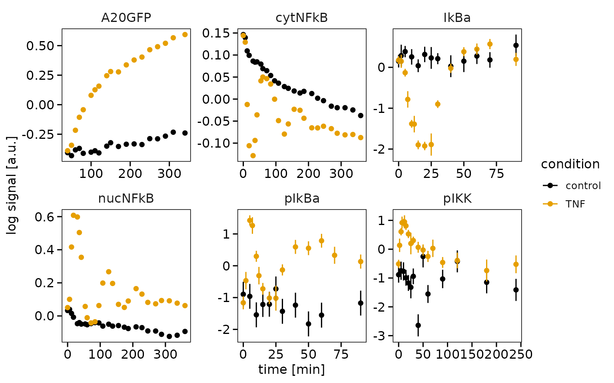
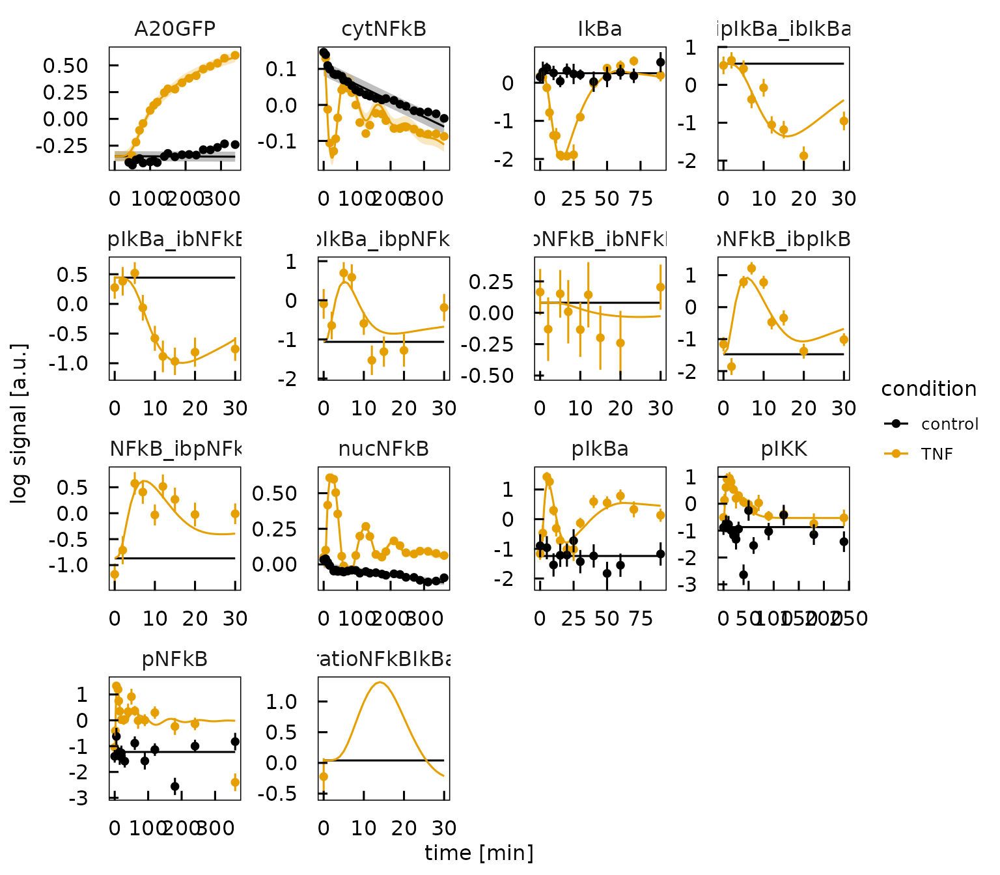

A model in dMod2 is a chain of function objects, each returning output and derivatives:
| class | constructors | mapping |
|---|---|---|
parfn |
P(), Pexpl(), Pimpl()
|
outer to inner parameters, or to a steady state |
prdfn |
Xs(), Xf()
|
parameters to trajectories, with (Xs()) or without
sensitivities |
obsfn |
Y() |
states to observables, observables to standard deviations |
objfn |
normL2(), constraintL2(),
datapointL2(), constraintStability()
|
\(-2 \log L\) |
* concatenates by the chain rule,
\[\frac{\partial y}{\partial \theta} = \frac{\partial g}{\partial x}\,\frac{\partial x}{\partial p}\, \frac{\partial p}{\partial \theta},\]
each factor exact, the middle one from the sensitivity equations;
+ adds objectives. normL2(data, g*x*pSS*p, e)
is the objective. Inner parameters are the symbols of the equations, per
condition; outer parameters are those of the fit.
The guide uses the model of Oppelt et al. [1], NFκB signaling in HepG2
cells after TNFα, from the project examples/oppeltNPJSystBiolAppl2018.
This chapter follows model.R. Multistarts, profiles and
other expensive results were computed once by the scripts of the project
and are stored in results/*.rds; the chapters load them
with stored(), which warns if a source script changed
since.
library(dMod2)
# generated sources and shared objects in build/, reused when nothing changed
dir.create("build", showWarnings = FALSE)
options(dMod2.outdir = "build", dMod2.cores = detectFreeCores())Reaction network
TNFα activates the receptor, the receptor IKK, and IKK phosphorylates IκBα and NFκB in their complex. Free NFκB enters the nucleus and induces IκBα and A20, the two negative feedbacks.
addReaction() adds a reaction to an
eqnlist; assignCompartment() places the
nuclear species in the nucleus of relative volume Vnuc.
Rates are concentration rates in the compartment of the educts (of the
products without net educts):
\[\dot x_i = \frac{1}{V_i} \sum_r S_{ri}\, V_{c(r)}\, v_r(x, p),\]
with \(S_{ri}\) the stoichiometry and \(V_{c(r)}\) the volume of the compartment of reaction \(r\).
| reaction | rate | description |
|---|---|---|
TNF → TNF + TNFR
|
uptake * TNF |
receptor activation |
TNFR → ∅ |
deact_TNFR * TNFR |
receptor deactivation |
Ikk → pIkk
|
act_Ikk_by_TNF / (1 + A20 / inh_Ikk) * TNFR * Ikk |
IKK activation |
Ikk → pIkk
|
act_Ikk_Base * Ikk |
basal IKK activation |
pIkk → ppIkk
|
act_pIkk * pIkk |
IKK phosphorylation |
ppIkk → iIkk
|
deact_ppIkk * ppIkk |
IKK inactivation |
iIkk → Ikk
|
trigger_iIkk * iIkk |
IKK recovery |
NfkIkb → NfkpIkb
|
act_Ikb_Base * NfkIkb |
basal IkBa phosphorylation |
NfkIkb → NfkpIkb
|
act_Ikb_by_Ikk * pIkk * NfkIkb |
IkBa phosphorylation by pIKK |
NfkIkb → NfkpIkb
|
act_Ikb_by_Ikk * eta_s_ppIkk * ppIkk * NfkIkb |
IkBa phosphorylation by ppIKK |
NfkIkb → pNfkIkb
|
act_Nfk_Base * NfkIkb |
basal NFkB phosphorylation |
NfkIkb → pNfkIkb
|
act_Nfk_by_Ikk * pIkk * NfkIkb |
NFkB phosphorylation by pIKK |
NfkIkb → pNfkIkb
|
act_Nfk_by_Ikk * eta_s_ppIkk * ppIkk * NfkIkb |
NFkB phosphorylation by ppIKK |
pNfkIkb → pNfkpIkb
|
act_Ikb_Base * eta_act_Ikb_Base_c_pNfkIkb * pNfkIkb |
basal IkBa phosphorylation, pNFkB complex |
pNfkIkb → pNfkpIkb
|
act_Ikb_by_Ikk * eta_act_Ikb_c_pNfkIkb * pIkk * pNfkIkb |
IkBa phosphorylation by pIKK, pNFkB complex |
pNfkIkb → pNfkpIkb
|
act_Ikb_by_Ikk * eta_s_ppIkk * eta_act_Ikb_c_pNfkIkb * ppIkk * pNfkIkb |
IkBa phosphorylation by ppIKK, pNFkB complex |
NfkpIkb → pNfkpIkb
|
act_Nfk_Base * eta_act_Nfk_Base_c_NfkpIkb * NfkpIkb |
basal NFkB phosphorylation, pIkBa complex |
NfkpIkb → pNfkpIkb
|
act_Nfk_by_Ikk * eta_act_Nfk_c_NfkpIkb * pIkk * NfkpIkb |
NFkB phosphorylation by pIKK, pIkBa complex |
NfkpIkb → pNfkpIkb
|
act_Nfk_by_Ikk * eta_s_ppIkk * eta_act_Nfk_c_NfkpIkb * ppIkk * NfkpIkb |
NFkB phosphorylation by ppIKK, pIkBa complex |
NfkpIkb → Nfk + pIkb
|
split_NfkpIkb * NfkpIkb |
release of NFkB |
pNfkpIkb → pNfk + pIkb
|
split_NfkIkb * eta_split_pNfkpIkb * pNfkpIkb |
release of pNFkB |
Nfk + Ikb → NfkIkb
|
form_complex * Nfk * Ikb |
complex formation |
∅ → mIkb
|
prod_mIkb_by_nNfk * nNfk |
IkBa transcription |
mIkb → ∅ |
degrad_mIkb * mIkb |
IkBa transcript degradation |
∅ → Ikb
|
prod_Ikb * mIkb |
IkBa translation |
pIkb → ∅ |
degrad_Ikb * pIkb |
pIkBa degradation |
Ikb → nIkb
|
int_Nfk * eta_int_Ikb * Ikb |
IkBa import |
pNfk → pnNfk
|
int_Nfk * eta_int_pNfk * pNfk |
pNFkB import |
Nfk → nNfk
|
int_Nfk * Nfk |
NFkB import |
pnNfk → nNfk
|
deact_pnNfk * pnNfk |
nuclear pNFkB dephosphorylation |
nIkb + nNfk → nNfkIkb
|
form_complex * eta_form_complex_nuc * nNfk * nIkb |
nuclear complex formation |
nNfkIkb → NfkIkb
|
ext_nNfkIkb * nNfkIkb |
complex export |
∅ → RnaA20_1
|
build_RnaA20 * nNfk |
A20 transcription |
RnaA20_1 → RnaA20_2
|
shuttle_RnaA20 * RnaA20_1 |
A20 transcript, delay 1 |
RnaA20_2 → RnaA20
|
shuttle_RnaA20 * RnaA20_2 |
A20 transcript, delay 2 |
RnaA20 → ∅ |
degrad_RnaA20 * RnaA20 |
A20 transcript degradation |
∅ → A20
|
build_A20 * RnaA20 |
A20 translation |
A20 → ∅ |
degrad_A20 * A20 |
A20 degradation |
Code
reactions <- eqnlist() |>
assignCompartment(nIkb = "nucleus", pnNfk = "nucleus", nNfk = "nucleus", nNfkIkb = "nucleus",
volume = "Vnuc") |>
# receptors activated by TNFα in the medium, which they do not use up
addReaction("TNF", "TNF + TNFR", "uptake * TNF", "receptor activation") |>
addReaction("TNFR", "", "deact_TNFR * TNFR", "receptor deactivation") |>
# IKK cycle: activation by receptors, inhibited by A20, and basal; inactivation and recovery
addReaction("Ikk", "pIkk", "act_Ikk_by_TNF / (1 + A20 / inh_Ikk) * TNFR * Ikk", "IKK activation") |>
addReaction("Ikk", "pIkk", "act_Ikk_Base * Ikk", "basal IKK activation") |>
addReaction("pIkk", "ppIkk", "act_pIkk * pIkk", "IKK phosphorylation") |>
addReaction("ppIkk", "iIkk", "deact_ppIkk * ppIkk", "IKK inactivation") |>
addReaction("iIkk", "Ikk", "trigger_iIkk * iIkk", "IKK recovery") |>
# IκBα and NFκB phosphorylated in their complex, basal and by pIKK and ppIKK
addReaction("NfkIkb", "NfkpIkb", "act_Ikb_Base * NfkIkb", "basal IkBa phosphorylation") |>
addReaction("NfkIkb", "NfkpIkb", "act_Ikb_by_Ikk * pIkk * NfkIkb", "IkBa phosphorylation by pIKK") |>
addReaction("NfkIkb", "NfkpIkb", "act_Ikb_by_Ikk * eta_s_ppIkk * ppIkk * NfkIkb",
"IkBa phosphorylation by ppIKK") |>
addReaction("NfkIkb", "pNfkIkb", "act_Nfk_Base * NfkIkb", "basal NFkB phosphorylation") |>
addReaction("NfkIkb", "pNfkIkb", "act_Nfk_by_Ikk * pIkk * NfkIkb", "NFkB phosphorylation by pIKK") |>
addReaction("NfkIkb", "pNfkIkb", "act_Nfk_by_Ikk * eta_s_ppIkk * ppIkk * NfkIkb",
"NFkB phosphorylation by ppIKK") |>
addReaction("pNfkIkb", "pNfkpIkb", "act_Ikb_Base * eta_act_Ikb_Base_c_pNfkIkb * pNfkIkb",
"basal IkBa phosphorylation, pNFkB complex") |>
addReaction("pNfkIkb", "pNfkpIkb", "act_Ikb_by_Ikk * eta_act_Ikb_c_pNfkIkb * pIkk * pNfkIkb",
"IkBa phosphorylation by pIKK, pNFkB complex") |>
addReaction("pNfkIkb", "pNfkpIkb",
"act_Ikb_by_Ikk * eta_s_ppIkk * eta_act_Ikb_c_pNfkIkb * ppIkk * pNfkIkb",
"IkBa phosphorylation by ppIKK, pNFkB complex") |>
addReaction("NfkpIkb", "pNfkpIkb", "act_Nfk_Base * eta_act_Nfk_Base_c_NfkpIkb * NfkpIkb",
"basal NFkB phosphorylation, pIkBa complex") |>
addReaction("NfkpIkb", "pNfkpIkb", "act_Nfk_by_Ikk * eta_act_Nfk_c_NfkpIkb * pIkk * NfkpIkb",
"NFkB phosphorylation by pIKK, pIkBa complex") |>
addReaction("NfkpIkb", "pNfkpIkb",
"act_Nfk_by_Ikk * eta_s_ppIkk * eta_act_Nfk_c_NfkpIkb * ppIkk * NfkpIkb",
"NFkB phosphorylation by ppIKK, pIkBa complex") |>
# release of NFκB from the complex with phosphorylated IκBα, and complex formation
addReaction("NfkpIkb", "Nfk + pIkb", "split_NfkpIkb * NfkpIkb", "release of NFkB") |>
addReaction("pNfkpIkb", "pNfk + pIkb", "split_NfkIkb * eta_split_pNfkpIkb * pNfkpIkb",
"release of pNFkB") |>
addReaction("Nfk + Ikb", "NfkIkb", "form_complex * Nfk * Ikb", "complex formation") |>
# IκBα transcript, induced by nuclear NFκB, the translation, and degradation of pIκBα
addReaction("", "mIkb", "prod_mIkb_by_nNfk * nNfk", "IkBa transcription") |>
addReaction("mIkb", "", "degrad_mIkb * mIkb", "IkBa transcript degradation") |>
addReaction("", "Ikb", "prod_Ikb * mIkb", "IkBa translation") |>
addReaction("pIkb", "", "degrad_Ikb * pIkb", "pIkBa degradation") |>
# nuclear import, dephosphorylation of pNFκB, the nuclear complex and the complex export
addReaction("Ikb", "nIkb", "int_Nfk * eta_int_Ikb * Ikb", "IkBa import") |>
addReaction("pNfk", "pnNfk", "int_Nfk * eta_int_pNfk * pNfk", "pNFkB import") |>
addReaction("Nfk", "nNfk", "int_Nfk * Nfk", "NFkB import") |>
addReaction("pnNfk", "nNfk", "deact_pnNfk * pnNfk", "nuclear pNFkB dephosphorylation") |>
addReaction("nIkb + nNfk", "nNfkIkb", "form_complex * eta_form_complex_nuc * nNfk * nIkb",
"nuclear complex formation") |>
addReaction("nNfkIkb", "NfkIkb", "ext_nNfkIkb * nNfkIkb", "complex export") |>
# A20 transcript with two delay stages, and A20 protein
addReaction("", "RnaA20_1", "build_RnaA20 * nNfk", "A20 transcription") |>
addReaction("RnaA20_1", "RnaA20_2", "shuttle_RnaA20 * RnaA20_1", "A20 transcript, delay 1") |>
addReaction("RnaA20_2", "RnaA20", "shuttle_RnaA20 * RnaA20_2", "A20 transcript, delay 2") |>
addReaction("RnaA20", "", "degrad_RnaA20 * RnaA20", "A20 transcript degradation") |>
addReaction("", "A20", "build_A20 * RnaA20", "A20 translation") |>
addReaction("A20", "", "degrad_A20 * A20", "A20 degradation")Expressions follow the expression
language of cppDE; factors eta_ relate two rates.
length(reactions$states)
#> [1] 23
as.eqnvec(reactions)[c("NfkIkb", "nNfk", "TNF", "TNFR")]
#> Idx Inner <- Outer
#> 1 NfkIkb <- -1*(act_Ikb_Base*NfkIkb)-1*(act_Ikb_by_Ikk*pIkk*NfkIkb)-1*(act_Ikb_by_Ikk*eta_s_ppIkk*ppIkk*NfkIkb)-1*(act_Nfk_Base*NfkIkb)-1*(act_Nfk_by_Ikk*pIkk*NfkIkb)-1*(act_Nfk_by_Ikk*eta_s_ppIkk*ppIkk*NfkIkb)+1*(form_complex*Nfk*Ikb)+1*(ext_nNfkIkb*nNfkIkb)*(Vnuc/1)
#> 2 nNfk <- 1*(int_Nfk*Nfk)*(1/Vnuc)+1*(deact_pnNfk*pnNfk)-1*(form_complex*eta_form_complex_nuc*nNfk*nIkb)
#> 3 TNF <- 0
#> 4 TNFR <- 1*(uptake*TNF)-1*(deact_TNFR*TNFR)Observation functions
Readouts (live-cell imaging, immunoblots) are sums of species with
scale s_, offset off_ and, for imaging,
bleaching rate tau_, on the natural log scale:
\[y = \log(s\, x + o) - \tau t .\]
nfkbCyt <- "NfkIkb + NfkpIkb + pNfkIkb + pNfkpIkb + pNfk + Nfk"
ikbCyt <- "NfkIkb + NfkpIkb + pNfkIkb + pNfkpIkb + pIkb + Ikb"
pNfkb <- "pNfkpIkb + pNfkIkb + pNfk"
# log of scale times species plus offset; the imaging signals bleach exponentially, which
# subtracts a term linear in time
logOf <- function(stem, species, bleach = FALSE)
sprintf(if (bleach) "log(s_%1$s * (%2$s) + off_%1$s) - tau_%1$s * time"
else "log(s_%1$s * (%2$s) + off_%1$s)", stem, species)
observables <- eqnvec(
nucNFkB = logOf("nucNFkB", "pnNfk + nNfk + nNfkIkb", bleach = TRUE),
cytNFkB = logOf("cytNFkB", nfkbCyt, bleach = TRUE),
A20GFP = logOf("A20GFP", "A20", bleach = TRUE),
IkBa = logOf("IkBa", "NfkIkb + pNfkIkb + NfkpIkb + pIkb + Ikb"),
pNFkB = logOf("pNFkB", pNfkb),
pIkBa = logOf("pIkBa", "NfkpIkb + pNfkpIkb + pIkb"),
pIKK = logOf("pIKK", "pIkk + ppIkk"),
ipIkBa_ibIkBa = logOf("ipIkBa_ibIkBa", "NfkIkb + pNfkIkb + NfkpIkb + pIkb + Ikb"),
ipNFkB_ibNFkB = logOf("ipNFkB_ibNFkB", nfkbCyt),
ipNFkB_ibpIkBa = logOf("ipNFkB_ibpIkBa", "NfkpIkb + pNfkpIkb"),
ipNFkB_ibpNFkB = logOf("ipNFkB_ibpNFkB", pNfkb),
ipIkBa_ibpNFkB = logOf("ipIkBa_ibpNFkB", "pNfkpIkb + pNfkIkb"),
ipIkBa_ibNFkB = logOf("ipIkBa_ibNFkB", "NfkIkb + NfkpIkb + pNfkIkb + pNfkpIkb"),
ratioNFkBIkBa = sprintf("log((%s) / (%s))", nfkbCyt, ikbCyt))Error model
Blots have a standard deviation per point in the column
sigma; imaging readouts get an estimated one. Rows with a
value in sigma ignore the error model.
# a constant standard deviation on the log scale for each imaging readout
errors <- eqnvec(nucNFkB = "sigma_nucNFkB", cytNFkB = "sigma_cytNFkB", A20GFP = "sigma_A20GFP")Steady-state constraints
NFκB and IKK are conserved, so \(f(x, p) = 0\) determines the resting state only with the totals:
conservedQuantities(reactions)
#> $TNF
#> [1] "1*TNF"
#>
#> $totalIkk
#> [1] "1*Ikk+1*pIkk+1*ppIkk+1*iIkk"
#>
#> $totalNfk
#> [1] "1*NfkIkb+1*NfkpIkb+1*pNfkIkb+1*pNfkpIkb+1*Nfk+1*pNfk+1*Vnuc*pnNfk+1*Vnuc*nNfk+1*Vnuc*nNfkIkb"Pimpl() solves the steady state numerically, with the
totals totalNfk and totalIkk as parameters,
TNF at 0, and exact derivatives of the root (Methods > Steady states).
steadyStates() is the analytic alternative.
# the cells rest before TNFα is added: a steady state with the amounts of NFκB and IKK conserved;
# an unstable one is returned rather than refused, the objective below keeps it stable
pSS <- Pimpl(reactions, modelname = "oppelt_ss", compile = FALSE,
derivMode = "forward-forward", controlsPTC = list(stability = FALSE))Events and switches
An event at time 0 sets TNF to dose_TNF, 1
under stimulation, 0 in the control. Event times and values may be
parameters. "piecewise(kon, A > A0, koff)" switches a
rate on a state, with exact sensitivities (cppDE
> Events).
Prediction functions
odemodel() generates C++ code for the ODE and the
sensitivity equations, Xs() the prdfn
x, Y() the observables g and the
error model e; compile = FALSE defers to one
compile().
# TNFα is added at time 0
events <- addEvent(NULL, var = "TNF", time = 0, value = "dose_TNF", method = "replace")
model <- odemodel(reactions, events = events, modelname = "oppelt_ode", compile = FALSE)
x <- Xs(model, options = list(atol = 1e-10, rtol = 1e-8))
g <- Y(observables, x, modelname = "oppelt_obs", compile = FALSE)
e <- Y(errors, g, modelname = "oppelt_err", compile = FALSE)The backend "cppDE" (default) integrates by BDF,
"Sundials" uses CVODES, "deSolve" deSolve. A
step is accepted if \(\bigl(\tfrac1n \sum_i
\varepsilon_i^2 / (\mathrm{atol} + \mathrm{rtol}\,|x_i|)^2\bigr)^{1/2}
\le 1\):
| option | default | controls |
|---|---|---|
atol, rtol
|
1e-6, 1e-6
|
absolute and relative error per step |
maxsteps |
1e6 |
steps per solve |
maxattempts |
50 |
rejected steps in a row |
hini |
0 |
first step, 0 estimates it |
sensErrCon |
TRUE |
(optionsSens only) sensitivities in the error test |
model.R sets rtol = 1e-8,
atol = 1e-10, since log observables magnify errors of small
states.
Experimental data
HepG2 cells without compound: 312 points in two conditions.
# the data set of the publication, values on the natural log scale; the imaging readouts have
# no standard deviation, the error model supplies one
raw <- read.csv("data/oppelt2018.csv", skip = 15)
readouts <- c(
"nuclear NFkB" = "nucNFkB",
"cytoplasmic NFkB" = "cytNFkB",
"A20" = "A20GFP",
"IkBa" = "IkBa",
"pIkBa" = "pIkBa",
"pNFkB" = "pNFkB",
"pIKK" = "pIKK",
"IP:IkBa | IB:IkBa" = "ipIkBa_ibIkBa",
"IP:NFkB | IB:NFkB" = "ipNFkB_ibNFkB",
"IP:NFkB | IB:pIkBa" = "ipNFkB_ibpIkBa",
"IP:NFkB | IB:pNFkB" = "ipNFkB_ibpNFkB",
"IP:IkBa | IB:pNFkB" = "ipIkBa_ibpNFkB",
"NFkB/IkBa ratio" = "ratioNFkBIkBa")
raw$name[grepl("^IP:IkBa \\| IB:NFkB", raw$name)] <- "ipIkBa_ibNFkB"
raw$name <- ifelse(raw$name %in% names(readouts), readouts[raw$name], raw$name)
raw$sigma[raw$name %in% c("nucNFkB", "cytNFkB", "A20GFP")] <- NA
# HepG2 cells without a compound, on the first blot scale
hepg2 <- subset(raw, cell == "HepG2" & scale == 1 & compound == "no")
hepg2$condition <- ifelse(hepg2$treatment == "TNF", "TNF", "control")
data <- as.datalist(hepg2[c("name", "time", "value", "sigma", "condition", "treatment")],
splitBy = "condition", keepCovariates = "treatment")
table(hepg2$name, hepg2$condition)
#>
#> control TNF
#> A20GFP 19 19
#> cytNFkB 26 26
#> IkBa 13 15
#> ipIkBa_ibIkBa 0 9
#> ipIkBa_ibNFkB 0 9
#> ipIkBa_ibpNFkB 0 9
#> ipNFkB_ibNFkB 0 9
#> ipNFkB_ibpIkBa 0 9
#> ipNFkB_ibpNFkB 0 9
#> nucNFkB 26 26
#> pIkBa 11 15
#> pIKK 14 18
#> pNFkB 12 17
#> ratioNFkBIkBa 0 1
covariates(data)
#> condition treatment
#> TNF TNF TNF
#> control control no
plotData(data, name %in% c("nucNFkB", "cytNFkB", "A20GFP", "IkBa", "pIkBa", "pIKK")) +
ggplot2::labs(x = "time [min]", y = "log signal [a.u.]")
Parameter transformation
define() and insert() build the assignments
of the parfn p:
-
define("x <- x", x = ...)takes every parameter ofpSS,x,gandeexcept the states, whose values come from the steady state; -
insert("x <- exp(x)", x = ...)puts every symbol on the log scale; -
define("TNF <- 0")sets TNFα to 0 for the steady state; -
branch(covariates(data))copies the assignments per condition,define(..., conditionMatch =)sets the dose.
# every parameter on the log scale; at rest no TNFα, the dose is the unit of TNFα
trafo <- eqnvec() |>
define("x <- x", x = setdiff(getParameters(pSS, x, g, e), reactions$states)) |>
insert("x <- exp(x)", x = .currentSymbols) |>
define("TNF <- 0") |>
branch(covariates(data)) |>
define("dose_TNF <- 0", conditionMatch = "control") |>
define("dose_TNF <- 1", conditionMatch = "TNF")
p <- P(trafo, modelname = "oppelt_par", compile = FALSE)
getEquations(p, conditions = "TNF")[c("dose_TNF", "TNF", "totalNfk", "Vnuc")]
#> Idx Inner <- Outer
#> 1 dose_TNF <- 1
#> 2 TNF <- 0
#> 3 totalNfk <- exp(totalNfk)
#> 4 Vnuc <- exp(Vnuc)
getEquations(p, conditions = "control")[c("dose_TNF", "TNF")]
#> Idx Inner <- Outer
#> 1 dose_TNF <- 0
#> 2 TNF <- 0compile() builds one shared object in
getOption("dMod2.outdir"), reusing unchanged objects.
compile(g, x, pSS, p, e, output = "oppelt", cores = 6)
prd <- g * x * pSS * p
length(getParameters(prd))
#> [1] 71Likelihood and prior
normL2(data, prd, e) returns \(-2 \log L\) with gradient and Gauss-Newton
Hessian (Methods > Likelihood and
prior). constraintL2() adds a Gaussian prior on the log
scale, also the start distribution of Optimization: mean 0 and standard
deviation 4 by default, narrower where the magnitude is known:
| parameters | mean | sd | reason |
|---|---|---|---|
bleaching rates tau_*
|
\(\log(0.1/360)\) | 2 | about 10 % of signal lost over six hours |
imaging noise sigma_*
|
\(\log 0.05\) | 1 | replicates scatter by about 5 % |
basal rates *_Base
|
\(-8\) | 2 | activation without TNFα far slower than with it |
shuttle_RnaA20, degrad_RnaA20,
build_A20, degrad_A20,
degrad_mIkb
|
\(\log(1/60)\) | 2 | transcripts and A20 turn over within about an hour |
trigger_iIkk |
\(\log(1/240)\) | 2 | IKK recovers over hours |
pSS also returns unstable roots
(controlsPTC = list(stability = FALSE));
constraintStability() is zero on a stable resting state and
reaches 100 per eigenvalue at the stability boundary, and needs
Pimpl(derivMode = "forward-forward") (Methods > Steady
states).
# a weak prior on the log scale: mean 0, standard deviation 4, a factor of about 55, narrower
# where the order of magnitude is known before the fit
outer <- getParameters(prd)
mu <- structure(rep(0, length(outer)), names = outer)
sigma <- structure(rep(4, length(outer)), names = outer)
# bleaching removes at most a few percent of the signal over the time of the data
bleach <- grep("^tau_", outer, value = TRUE)
mu[bleach] <- log(0.1 / max(as.data.frame(data)$time))
sigma[bleach] <- 2
# the imaging readouts scatter by about 5%
noise <- grep("^sigma_", outer, value = TRUE)
mu[noise] <- log(0.05)
sigma[noise] <- 1
# without TNFα, IKK, IκBα and NFκB are activated far more slowly than after it
basal <- grep("_Base$", outer, value = TRUE)
mu[basal] <- -8
sigma[basal] <- 2
# transcripts and A20 are made and degraded within about an hour
turnover <- c("shuttle_RnaA20", "degrad_RnaA20", "build_A20", "degrad_A20", "degrad_mIkb")
mu[turnover] <- log(1 / 60)
sigma[turnover] <- 2
# IKK recovers from its inactive form over hours
mu["trigger_iIkk"] <- log(1 / 240)
sigma["trigger_iIkk"] <- 2
# the cells rest: a term that is zero on a stable resting state and reaches 100 where it loses
# stability, on a ramp of a tenth of the inverse time span of the data, wide enough for the model
# of a fit step to see the boundary before the step crosses it
rampWidth <- 0.1 / max(as.data.frame(data)$time)
stability <- constraintStability(pSS, p, width = rampWidth)
obj <- normL2(data, prd, e) + constraintL2(mu, sigma = sigma) + stability
# the stopping tolerances of trust(), above the error that the solver settings leave: ftol and
# mtol an order of magnitude above that of the value (about 2e-6), gtol two above that of the
# gradient (about 8e-5)
tolerances <- list(ftol = 1e-4, mtol = 1e-4, gtol = 1e-2)Model evaluation
The best fit of Optimization, with the gauge of Symmetries:
best <- as.parvec(readRDS("results/fits.rds"))
value <- obj(best, fixed = gauge)
c(value = value$value, data = attr(value, "data"), prior = attr(value, "prior"))
#> value data prior
#> -488.67736 -511.16897 22.49162
max(abs(value$gradient))
#> [1] 0.007025491Prediction and data, with one standard deviation of the error model as a band:
times <- seq(0, 360, length.out = 361)
last <- pmax(with(lbind(data), tapply(time, name, max)), 30)
plotCombined(prd(times, c(best, gauge), deriv = FALSE), data, time <= last[as.character(name)],
errfn = e) +
ggplot2::facet_wrap(~name, scales = "free", ncol = 4) +
ggplot2::labs(x = "time [min]", y = "log signal [a.u.]")
Reference: addReaction(),
assignCompartment(), conservedQuantities(),
Pimpl(), steadyStates(),
odemodel(), Xs(), Y(),
as.datalist(), covariates(),
define(), insert(), branch(),
P(), compile(), normL2(),
constraintL2(), constraintStability(),
plotData(), plotCombined()